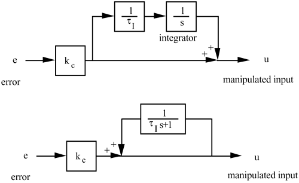
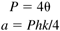
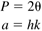
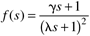

| 1: | Verify that the two block diagrams below result in the same PI control algorithm transfer function.  |
| 2: | Use the SIMULINK diagram presented in Figure 11-16 to verify the results presented in Example 11.1. Show that, as the setpoint change approaches 0.5 the integral windup effect becomes worse. |
| 3: | Verify the results of Example 11.2 using a SIMULINK simulation. Also, discuss the effect of the resetting time, tr, on the ARW results. |
| 4: | Consider the process furnace temperature cascade control system shown in Figure 10-2, where the output of the temperature control loop is a setpoint for the fuel gas flow controller. Draw a signal, similar to Figure 11-10, that shows that an external antireset strategy is used for the temperature controller. |
| 5: | Consider Example 11.3. Use SIMULINK to show that cascade control without antireset windup protection yields significant overshoot for a setpoint change. |
| 6: | Show that the relay procedure for an integrator + time-delay process will exhibit the following period and output amplitude:

|
| 7: | Show that the relay procedure for a gain + time-delay process will exhibit the following period and output amplitude:

|
| 8: | The example process used in this module is first order + time delay, with a gain of 1, a time constant of 10, and a time delay of 5. Compare the Ziegler-Nichols PI control performance when the critical gain and period are obtained using two different methods: relay-based cycling, and Ziegler-Nichols closed-loop cycling. Also, compare the Tyreus-Luyben tuning parameters obtained using the two methods. Does the relay-based method generally yield more conservative results? |
| 9: | For an integrator + time-delay model, find the IMC-based PI parameters, assuming an IMC filter with the form

where g is selected to yield a PI controller. |
| 10: | For a gain + time-delay model, find the IMC-based PI parameters when the all-pass method is not used. |
| 11: | For a first-order + time-delay process, with a time constant of 10 minutes and a time delay of 0.5 minutes, use the autotune procedure. How close are the critical gain and ultimate period to the values obtained by the Ziegler-Nichols closed-loop oscillation method? What are the process parameters for an integrator + time-delay model? Based on these parameters, simulate the closed-loop behavior of a PI controller, with various values of l. What l values do you recommend? Why? |
| 12: | For a first-order + time-delay process, with a time constant of 0.5 minutes and a time delay of 10 minutes, use the autotune procedure. How close are the critical gain and ultimate period to the values obtained by the Ziegler-Nichols closed-loop oscillation method? What are the process parameters for a gain + time-delay model? Based on these parameters, simulate the closed-loop behavior of a PI controller, with various values of l. What l values do you recommend? Why? |